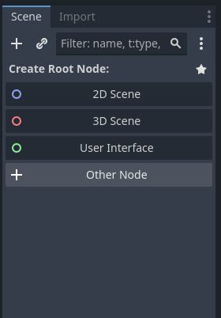
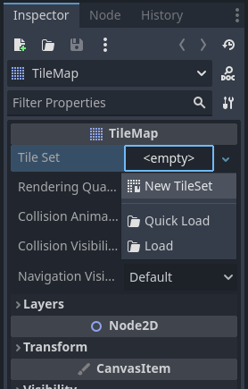
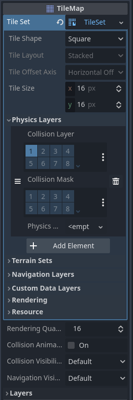
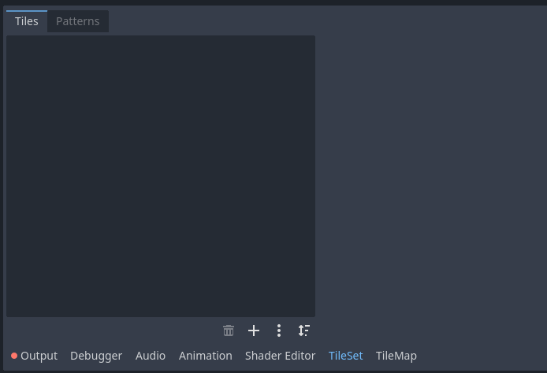
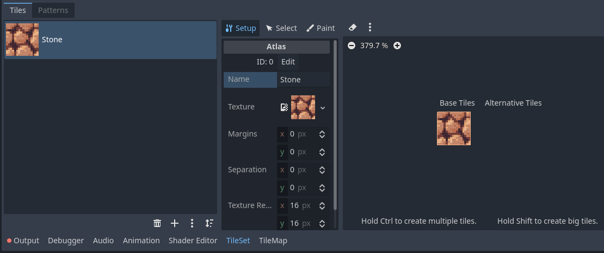
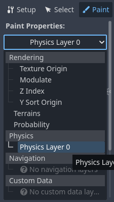
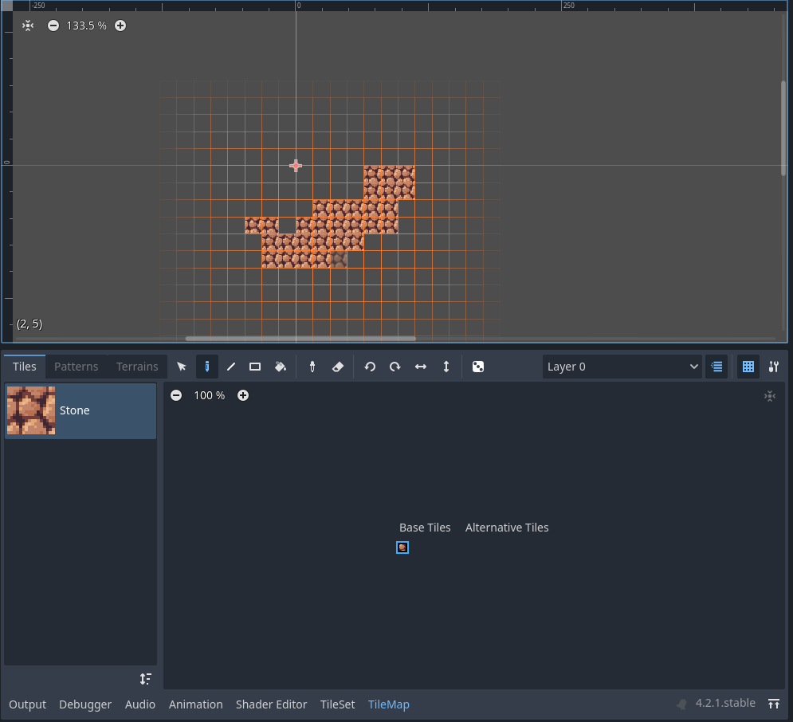
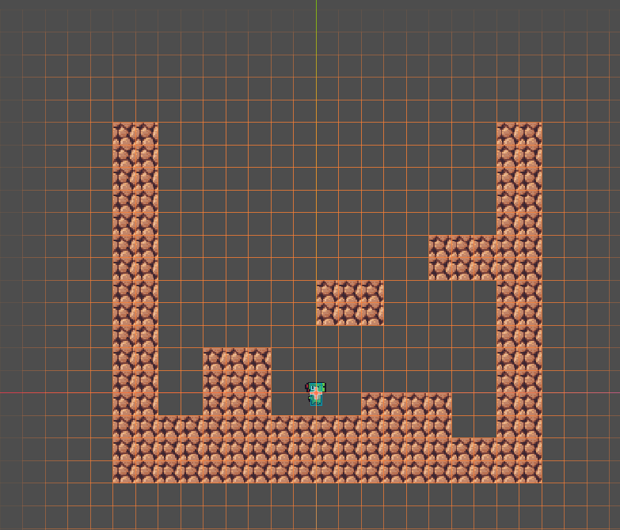
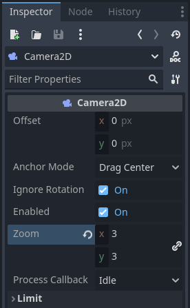

On this page we will create a base world scene for our player to move around in!
To make a test level we need to create a new scene. We can do this by pressing the plus sign on top of the viewport next to our player scene tab. This will create a blank scene.
For a level, we don't need any special functionality so we only need to select 2D Scene as our root node. Let's name our root node World.
Of course, right now our level is still empty. In order to make a level we will be using Tiles. You can think of tiles as the building blocks that you use to create a level. In order to add them we need a TileMap node. Right click the world node and add a new node. Navigate through the menu and find the TileMap node (the icon should be a grid pattern). Select the TileMap node and look over to the inspector.
In the inspector select the tile set property and create a new TileSet, then select the new tileset. A blue menu will appear in the inspector as well as two new tabs in the bottom panel. In the inspector go to the physic layers section of the TileSet menu, create a new element, and then disable the masks (the layer will be kept as world (1)).
Then, on the bottom panel, select the TileSet tab (TileMap will be selected by default). This is where we will be assigning the textures, collision shapes and other functionality to our individual tiles.
At the bottom of the tab there is a plus sign. Click it and select the Atlas option. Navigate through your file system and select the Stone Block texture. A popup will appear asking if you want to auto generate tiles, select yes and Godot will automatically make tiles out of the texture provided (since the texture is 16x16 pixels, it will only be one tile). Select the texture that appears and go to the setup tab. Lets name this tile Stone.
Our tile isn't done yet though. While it has a texture we haven't set it's collision shape yet. In order to do so we must go to the paint tab in the TileSet editor, then select the paint properties drop down. Select Physics Layer 0.
Finally, click the texture in the box to the right. The texture should gain a slight blue (which shows the collision shape on the tile. Now we are ready to make some level! Select the TileMap tab in the bottom panel, then click the stone block tile in the large box. You can now paint the stone tile in the viewport to build the level!
Of course, we are still missing our player. To add it is quite simple, just drag the saved scene from the file system into the World's scene tree. Once in, you can move it around in the level to place it just right. Here's what my test stage looks like:
Once your happy with your layout we can run our game for the first time! Press the play button on the right side of the top bar while you have the world scene open, a popup will ask what scene to set as the default. We can just select current and watch our game open. However, everything is zoomed way out! In order to fix this we need to edit our player camera. Close your game (but not the editor!), then open our player scene. In the player scene tree select the Camera2D node and go to the inspector. We need to increase the zoom property some (I choose 3 for mine).
You can run your game again, and you will see that the camera is indeed zoomed in! Of course, our player can't move, but we will fix that in our next section.